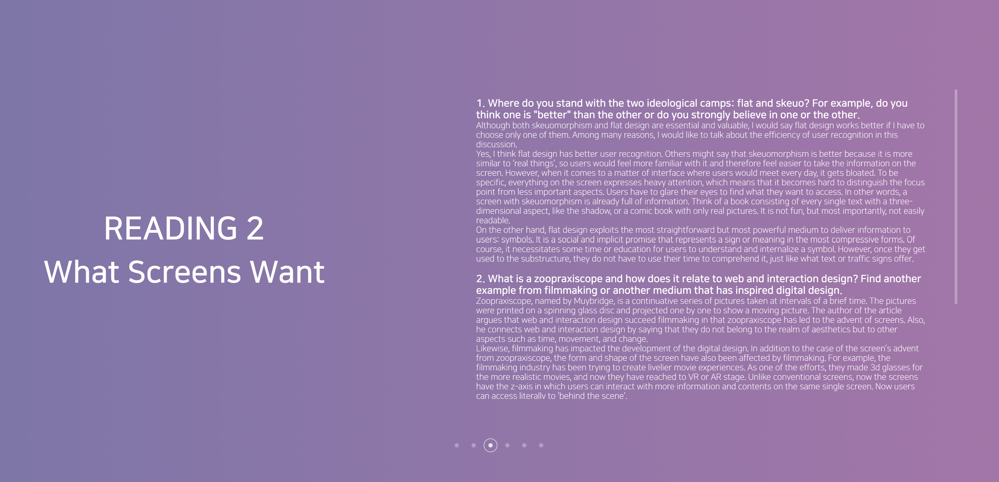
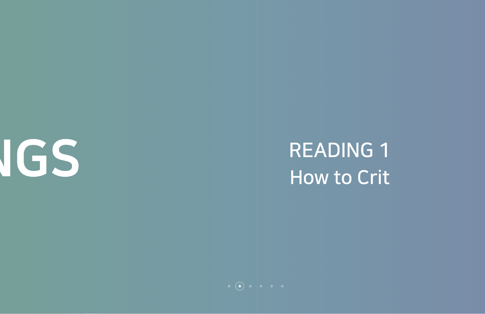
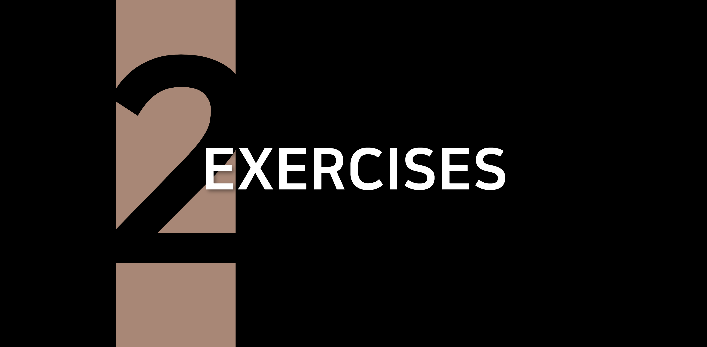
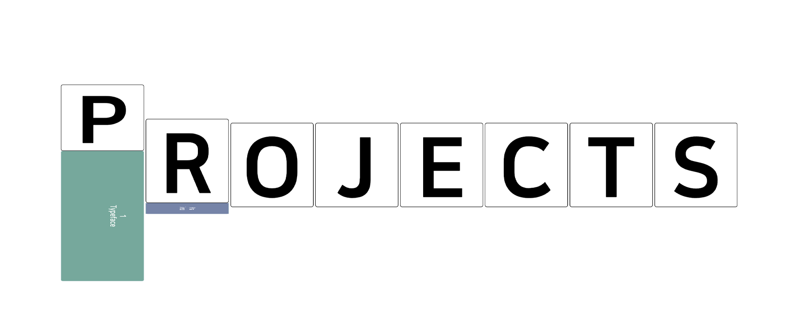
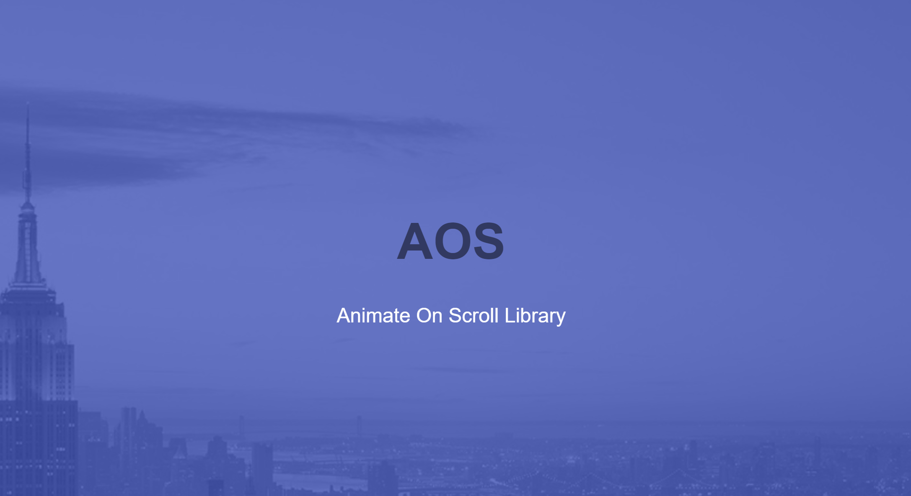

I like simple things.
I feel catharsis when a minimal design explains the maximum.
In this last project, I tried to align my works in the minimum elements.

One of the best web designs I think is Apple’s product page. They communicate with their customers within a very effective and clear form. They might use some splendid colours and videos on the page; however, I’m not talking about the contents. What I’d like to focus more on is the frame with no unnecessary aspects.
The structure is very simple, but there are various intriguing details in it. Most of their pictures are sequence images or videos, and those are visualized with animations. I respect this way to present, so I’d try similar methods.

I want to draw people’s curiosity. I want to surprise them (not that much!) like a little present box. I want to provide visitors with an experience animated by my webpage. From that point, I made a list of verbs that perhaps make people excited: unwrap, untie, unbutton, discover, peekaboo, open, turn over, hatch, unlock, stick out, pull…
I mapped out a color palette. I wanted to use many colors but not very vivid ones -- something neutral yet joyful. Instead of picking specific colors, I set the saturation and hue (Saturation 30%, Hue 66%) so that I can use diverse colors in a similar tone.
I initially started working on the Readings section. I was planning on placing the readings into iframe, but I thought it is kind of unnecessary. Rather, I put them on a full-sized screen and made them parallelly connected. I added small buttons for navigation.
One problem with this section was that the text is quite a lot for small screens. I had to figure out how to put them on a single page with a fixed size. I set different text-box sizes depending on the width of the screen and made the text-boxes have a scroll in them to contain more contents than their size.
What’s good about this presentation is that it does not show the next contents on the same page, so I think users would feel interested when they go into the unknown. The sliding (or swapping) animation and background gradation helps the joy of moving to other pages.
Then I worked on the Exercises section. Similar to the Readings section, I wanted to keep the contents secret. I covered black matte on the grid where all exercises are in. Then, when the mouse cursor is on it, it reveals the number of exercises. At first, I made them become white when hovered, but I found that is less interesting. So I put different colors in the same tone. The numbers are quite huge and thick to present better visibility.
While coding the Exercises section, I came up with an idea to flip vertically to show the contents and started to work on the Projects section. At first, I was creating a grid to align the items, but it seemed like repeating the Exercise section. So I decided to make use of the letters ‘PROJECTS’. I designed it also hides its contents and users can check it when it has hovered. I used similar colors in other sections.
Inspired by Apple’s web page, I applied a scroll library to present animations depending on how much the scroll has moved. There are many libraries available, but I used AOS (Animate On Scroll) library, which is very easy to work with. I applied the effect to all sections.

After I finished most of the index page, I found something is missing. Although I intended the minimal layout, it seemed that the page is still visually not appealing. So I added some tropical leaves with scroll animation so that visitors can have a kind of adventuring or discovering experience when they clearing way the leaves and access to the contents.